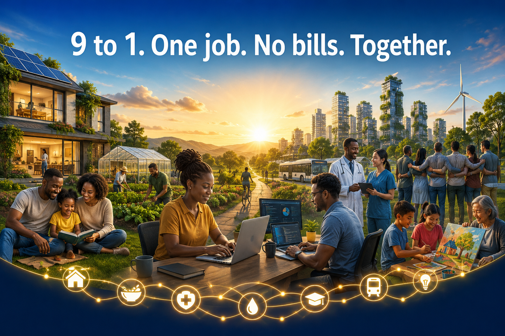

Four-hour contribution
A shorter workday is treated as a design goal for productivity, family, learning, and civic life.
Emerging NGO and ideological think tank
9 to 1. One job. No bills. Together.
Beyond Bills imagines a post-currency economy where technology frees people from excessive work, every adult contributes through one ability-suited job, and a global network directly provisions life's essentials—turning four hours of meaningful work into more time, security, dignity, and human possibility.

The manifesto
The Beyond Bills manifesto argues that economies should be organized around guaranteed access to life's essentials rather than endless currency circulation. It proposes one meaningful, ability-suited job for every adult, a 9-to-1 workday, responsible use of automation, and a global service network that provisions housing, food, healthcare, education, energy, transport, communication, and social dignity.
A shorter workday is treated as a design goal for productivity, family, learning, and civic life.
Every adult contributes through one role matched to capacity, talent, training, and dignity.
Remuneration is direct access to essential services, reducing dependence on bills and debt.
Individuals, companies, and institutions cooperate to provision a shared service conglomerate.
Join community
Join a multilingual circle of organizers, researchers, technologists, builders, caregivers, entrepreneurs, and citizens exploring how essential-life provisioning could work in practice.